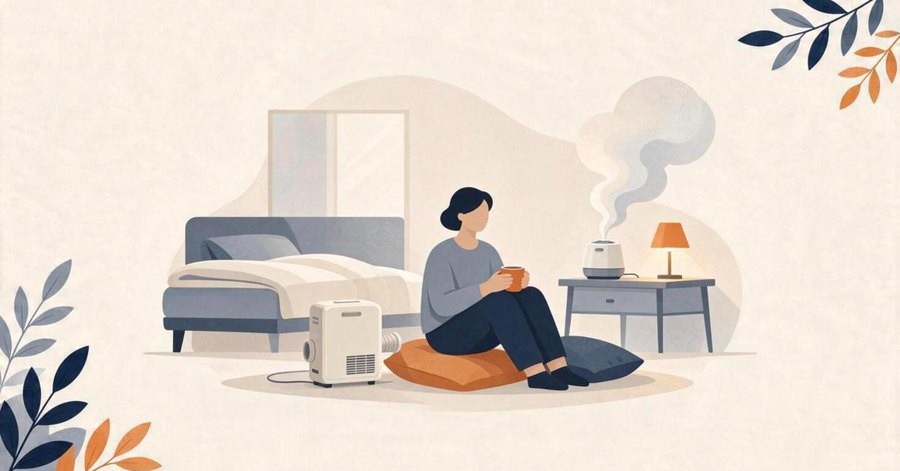
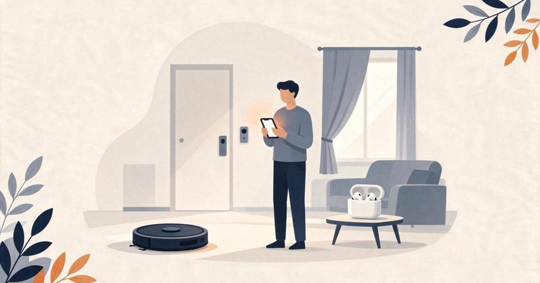

JOB CHANGE/WORKPLACE/AI AT WORK/BEFORE YOU BUY/JOB CHANGE/WORKPLACE/AI AT WORK/BEFORE YOU BUY/JOB CHANGE/WORKPLACE/AI AT WORK/BEFORE YOU BUY/
BEAUTY
美容家電
ドライヤー、ヘアアイロン、スチーマーなど。担当はゆづきです。
- 11/24高いドライヤーを買う前に見る4つ高いドライヤーは何が違う？ゆづき
- 11/20ReFa ファインバブル Uの悪い口コミ・デメリット5つ水圧の強さを重視する人は後悔しやすいゆづき
- 10/24ヤーマン フォトスチーマー EXの悪い口コミ・デメリット5つミストやタンクの扱いが気になる人は後悔しやすいゆづき
- 10/24ブラウン光美容器シルクエキスパートの悪い口コミ・デメリット5つ痛みが苦手・肌が敏感な人は後悔しやすいゆづき
- 10/24ReFa・KINUJO・SALONIAストレートアイロン比較悪い口コミからわかる、あなたに合う1本ゆづき
- 10/24ナノケア スチーマー EH-SA0Bの悪い口コミ・デメリット5つ毎日続けられない人は後悔しやすいゆづき
- 10/24ダイソン Supersonic Ionicの悪い口コミ・デメリット5つパサつき・音が気になる人は後悔しやすいゆづき
- 10/24ReFaストレートアイロンの悪い口コミ・デメリット5つくせ毛・多毛の人は後悔しやすいゆづき
- 10/19KINUJO・ナノケア・ReFaドライヤー比較悪い口コミからわかる、あなたに合う1台ゆづき
- 10/18ReFaスマートダブルの悪い口コミ・デメリット5つ星3レビューでわかった後悔しやすい人ゆづき
- 10/18ナノケアEH-NA0Kの悪い口コミ・デメリット5つ星3レビューでわかった後悔しやすい人ゆづき
- 10/18KINUJOドライヤーの悪い口コミ・デメリット5つ98件読んでわかった後悔しやすい人ゆづき

HOME
暮らしの家電
一人暮らしの部屋で使う家電と、毎日の手入れの道具。
- 11/26アイリスオーヤマ 布団乾燥機カラリエの悪い口コミ・デメリット5つ布団全体をしっかり温めたい人は後悔しやすいゆづき
- 11/22卓上加湿器を買う前に見る5つ在宅の日、夕方に肌が乾く人へ。方式・加湿量・タンク・手入れ・置き場所ゆづき
- 11/3オーラルB プロ1の悪い口コミ・デメリット5つ音や振動が苦手な人は後悔しやすいゆづき
- 11/3ラクアmini（サンコー食洗機）の悪い口コミ・デメリット5つ自炊が多い人は後悔しやすいゆづき
- 11/3±0スタイルスチーマーの悪い口コミ・デメリット5つシワ取りに完璧を求める人は後悔しやすいゆづき
- 10/18ルンバ205コンボの悪い口コミ・デメリット5つ買って後悔しやすい家・満足しやすい家ゆづき
DESK
仕事の小物
マウスや充電器、リングライトなど、デスクと通勤、オンライン会議で使う物。
- 11/23リングライトを買う前に見る4つと置き場所オンライン会議の顔が暗い人へゆづき
- 11/20ロジクール M650とERGO M575SPを比較悪い口コミからわかる、仕事に合うマウス美咲
- 11/14ロジクール ERGO M575SPの悪い口コミ・デメリット5つ手が小さい人・細かい作業が多い人は後悔しやすい美咲
- 11/13Anker Nano Charger（20W）の悪い口コミ・デメリット5つ「急速充電で劇的に速く」を期待する人は後悔しやすい美咲
- 11/13ロジクール M650の悪い口コミ・デメリット5つマウスを持ち上げて使う人は後悔しやすい美咲
- 10/31Anker Power Bank Fusion（10000mAh）の悪い口コミ・デメリット5つ軽さ重視の人は後悔しやすい美咲

GADGET
ガジェット・スマートホーム
ロボット掃除機やスマートロックなど。担当はYukiです。
- 11/20Anker Soundcore P31iの悪い口コミ・デメリット5つ接続の安定性を重視する人は後悔しやすいYuki
- 11/14ルンバ205コンボとSwitchBot K10+を比較悪い口コミからわかる、あなたの部屋に合う1台Yuki
- 11/14SwitchBot カーテン3の悪い口コミ・デメリット5つ両開きのカーテンや静かさ重視の人は後悔しやすいYuki
- 11/13SwitchBot ロックProの悪い口コミ・デメリット5つオートロックを完全に任せたい人は後悔しやすいYuki
- 10/31SwitchBot ハブ2の悪い口コミ・デメリット5つ古いエアコンや照明を細かく操作したい人は後悔しやすいYuki
- 10/18SwitchBot K10+の悪い口コミ・デメリット5つ小さいロボット掃除機で後悔しやすい人Yuki
WHY HERE
働き方のサイトに、この棚がある理由
仕事を選ぶのも、仕事でAIを使うのも、体力と気持ちに余裕がないと続きません。寝る前の10分、朝の支度、部屋の片づけ。そのあたりが整っていると、転職の面接も、新しいツールを覚えるのも、少し楽になります。
商品の紹介はすべて「買う前チェック帳」側で行い、このサイトでは物を売りません。
WRITERS
書いているのは、ゆづき・美咲・Yuki
美容家電と暮らしの家電はゆづき、仕事の小物は美咲、ガジェットはYukiが担当しています。